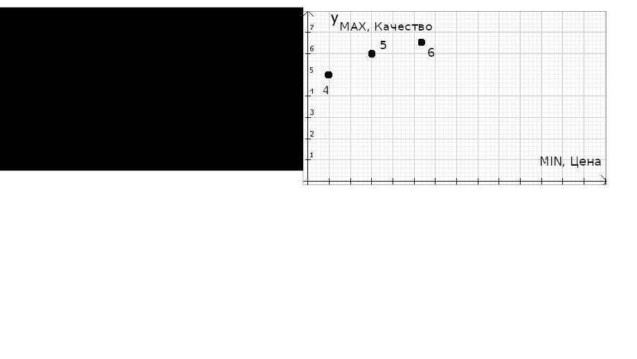
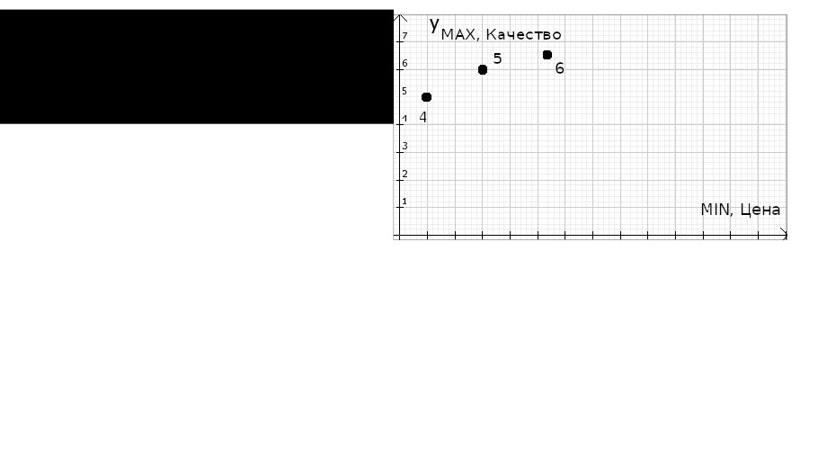
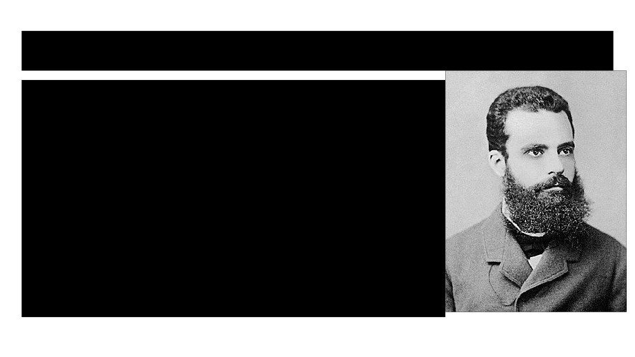
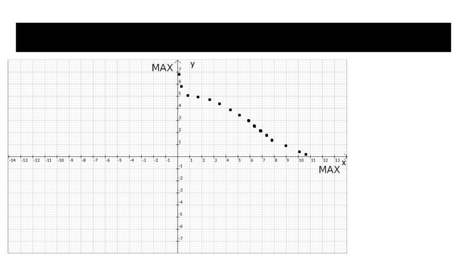
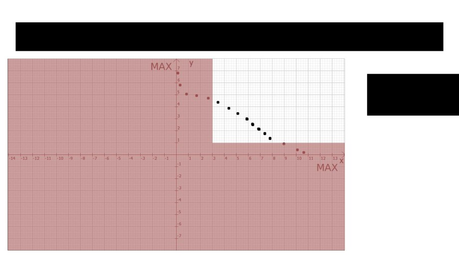
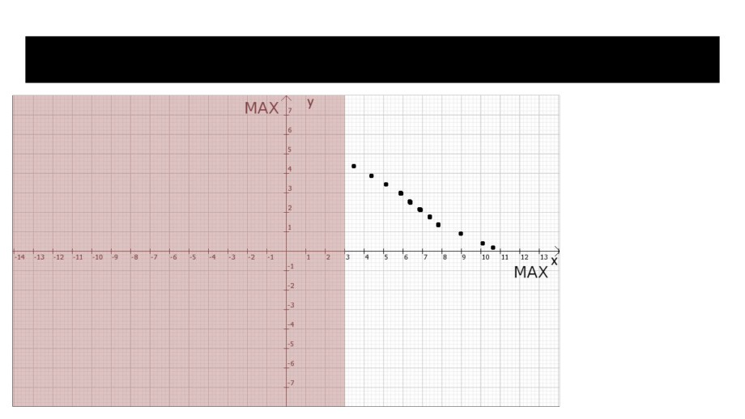
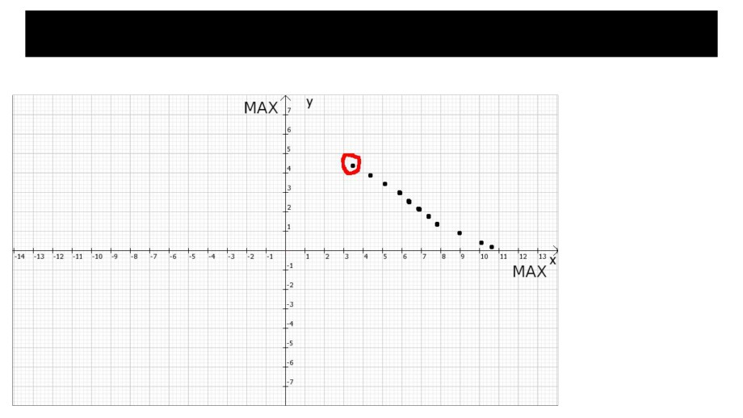
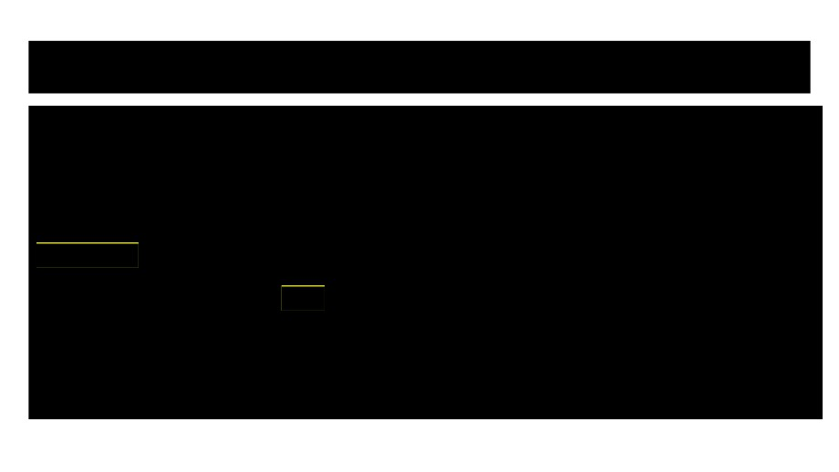

Дискретные задачи многокритериальной оптимизации
Скатков Александр
Научный руководитель: В.В. Розен
В чем суть?
Когда вам нужно выбрать какой-то предмет, путь, способ что-то сделать и т.д,
у чего есть какие-то критерии, вы автматически в голове производите анализ
этих объектов, основываясь на этих критериях, чтобы выбрать наилучший
(предмет или путь и т.д.).
С этого момента я буду называть случаи, пути и т.д. одним словом - исход.
В чем суть?
Например, нужно выбрать телефон из следующих:
- Дорогой и плохой.
- Дешевый и хороший.
Конечно, мы выберем тот, за который меньше заплатим и он будет лучше.
Это простейший пример такого анализа.
Здесь варианты телефонов - исходы.
Качество и цена - критерии исходов.
В чем суть?
Иногда бывают случаи, когда нельзя точно определить, какой исход будет
наилучшим.
Например:
- Дорогой и качественный телефон
- Дешевый, но некачественный телефон
Значения критериев этих исходов таковы, что нельзя точно определить,
какой из них лучше. Это называется эффектом несравнимости.
Такие исходы буду называть несравнимыми.
В чем суть?
Важно понимать еще одну вещь.
В любой критериальной системе критерии могут быть позитивными и
негативными
Мы с этим уже сталкивались! Вернемся к телефонам.
Идеальный в нашем понимании телефон должен иметь минимальную цену
и максимальное качество.
Таким образом, цена это негативный критерий, а качество - позитивный.
В чем суть?
Если сформулировать определение:
Позитивный критерий имеет следующий смысл в задаче:
Первый исход лучше второго по позитивному критерию, если значение этого
критерия у первого исхода больше, чем у второго.
Негативный критерий:
Первый исход лучше второго по минимальному критерию , если значение
этого критерия у первого исхода меньше, чем у второго.
В чем суть?
Исходы несравнимы, если по некоторым критериям одна точка лучше
другой, а по некоторым - хуже.
Первый исход лучше второго, если он по всем критериям лучше или равен
по отношению ко второму. Причем как минимум один критерий первого
исхода должен быть больше того же критерия второго исхода.
Соответственно, второй исход хуже первого, если первый лучше второго.
В чем суть?
Если стоит задача выбрать лучший исход, причем количество критериев
больше одного, то задача называется многокритериальной.
Обычно в задачах большое количество критериев и много несравнимых
исходов.
Например, выбор квартиры среди их множества. У каждого исхода(квартиры)
есть критерии: качество ремонта, цена, этаж, уровень шума и т.д.
Если бы всегда была лучшая квартира, то любой покупатель бы просто
находил ее и покупал, но в реальности это не так.
Именно эффект несравнимости делает эти задачи сложными и интересными,
да и нашу жизнь, в общем.
В чем суть?
Поиском лучшего исхода при данных критериях, которых больше одного, при
наличии множества несравнимых исходов, занимаются задачи
многокритериальной оптимизации.
Дискретные задачи многокритериальной оптимизации занимаются поиском
лучшего исхода при конечном их наборе.
Графическое представление исходов
Каждый исход соответствует некоторому набору конкретных значений
критериев. Таким образом, мы можем изобразить все точки на плоскости,
если имеем два критерия, которые будут осями. В трехмерном пространстве,
если три критерия и т.д.
Графическое представление исходов
Позитивные критерии буду называть MAX, а негативные - MIN.
Вернемся к ситуации с телефонами.
Цена - MIN критерий
Качество - MAX критерий
Возьмем множество исходов(телефонов) и рассмотрим их

Мы исключили исходы, для которых можно
выбрать исходы, лучшие по всем параметрам
Мы ведь не будем покупать телефон, если для
него есть более качественный и дешевый
То, что у нас осталось - множество несравнимых
между собой исходов. Такое множество
называется множеством Парето. Поподробнее о
нем поговорим немного позже.
Более четкая система определений
Если первый исход, как мы называли, “лучше” второго, то говорят, что первый
исход доминирует по Парето.
Если среди множества исходов есть такой, который не доминируется по
Парето другими исходами этого множества, то такой исход называют Парето-
оптимальным.
В любом непустом множестве исходов есть Парето-оптимальный.
Множество Парето - объединение Парето-оптимальных исходов.

Исходы 4,5,6 образуют множество Парето, так как
они не доминируются друг другом и другими
исходами. Эти исходы доминируют остальные
исходы( мы говорили тогда, что они “лучше”),
поэтому те точки не вошли в множество Парето.

Парето
Говоря о такой теме, нельзя не упомянуть Вильфредо
Парето, в честь которого названо множество понятий
многокритериальной оптимизации. Он являлся
инженером, экономистом и социологом.
На основе его высказываний и работ строится
большое множество экономических теорий и
принципов. Одним из самых известных является
принцип 80/20 , который, в некоторых случаях
удивительным образом отражает некоторые
закономерности жизни, но это уже другая тема.
Что дальше?
После того, как мы исключили доминируемые исходы, мы получили множество Парето.
Никто из нас в здравом уме не выйдет из магазина телефонов, не останется дома, если
нужно выбрать дорогу, не перестанет искать подходящую квартиру и т.д.
В таких случаях наш мозг все-таки выбирает какой-то исход. Единого верного правила
его выбора не существует, так как множество Парето обладает следующим интересным
свойством:
Пусть мы зафиксировали наш выбор на какой-то точке из множества Парето-оптимальных.
Если мы выберем другую точку из этого множества, которая будет лучше по какому-то
критерию, то по отношению к зафиксированному выбору у нее как минимум один
критерий станет хуже. Собственно, эффект несравнимости. Это действительно важно
понимать.
Что дальше?
Разговорами о том, как же наш мозг все-таки выбирает какой-то исход при
несравнимости, заниматься мы не будем.
Рассмотрим основные алгоритмы, которые выделяет наука для таких
случаев. Они же (алгоритмы), многокритериальные оптимизации.
Оптимизации
Не все оптимизации позволяют гарантированно выбрать один исход.
Некоторые лишь сужают множество Парето.
Например, мы можем сказать:
“Мы не хотим покупать телефоны с ценой выше, чем ...”
Оптимизации
В этот момент важно отметить, что задачи c MAX и MIN критериями легко
свести к задачам с только MAX критериями, они же ALLMAX, простым
инвертированием знака значений MIN критериев. Дальше речь пойдет только
про оптимизации с ALLMAX задачами.
Оптимизация: Указание нижних границ критериев
Название говорит само за себя:
1. Задаем нижние границы
2. Исключаем исходы, которые не удовлетворяют границам.

Исходное множество Парето

Выбираем нижние границы критериев
Гранинцы:
1 по y
3 по x
Оптимизация: субоптимизация
1. Выделяется один критерий
2. По остальным назначаются нижние границы
3. Исключаются неподходящие по границам исходы
4. Выбирается исход, который максимизирует выбранный критерий.
Например: Для квартир. Выделяем критерий - количество солнечных сторон.
Назначаем некоторый допустимый уровень ремонта, количества парков рядом,
количества магазинов в радиусе 100м и т.д. Дальше исключаем неподходящие.
Выбираем квартиру, которая имеет наибольшее количество солнечных сторон.
Стоит уточнить, что MIN критерии для этого примера, если бы они были,
умножаются на -1, и если бы не было цели сделать пример понятным, то нужно бы
было выбирать квартиру с наибольшей ценой, среди отрицательных, после
домножения.
Исходное множество Парето
Выбираем критерий Y, например.
Задаем границы для остальных критериев (для X)

Исключаем неподходящие исходы

Выбираем исход, максимизирующий выбранный
критерий (Y)
Оптимизация: Лексикографическая оптимизация
1. Упорядочиваем критерии по важности
2. Выбирается лексикографически наибольший исход
Пояснение: сначала выбираются исходы с наибольшим первым
критерием. Среди выбранных, исходы с наибольшим вторым критерием,
среди этих выбранных, наибольшие с третим критерием и т.д.
Оптимизация: обобщенный критерий
1. Придумываем новый критерий, зависящий от других критериев
(исходных) он же обобщенный. Получаем функцию переменных,
количеством с количество частных (исходных) критериев.
2. Выбираем исход, максимизирующий обобщенный критерий
Как придумать обобщенный критерий
На самом деле, как угодно. Подойдет любая функция, которая определена
при значениях частных критериев задачи.
Например, есть частные критерии: K1,K2,K3
Обобщенный критерий: K0 = K1*K2 +K3*K3
Таких можно придумать бесконечно много.
Рассмотрим самый распространенный из них
Взвешенная сумма частных критериев
Обобщенный критерий представляет из себя линейную комбинацию частных
критериев. Причем, коэффициенты называют весовыми.
K_0 = a_1 * K_1 + a_2 * K_2 + … + a_n * K_N
K_1 … K_N - частные критерии
K_0 - обобщенный критерий
a_1 … a_n - весовые коэффициенты
Взвешенная сумма частных критериев
Например, есть исходы с ALLMAX критериями. Пусть их будет 3 - K_1,K_2,K_3
Обобщенным будет : W_об = 4 * K_1 + 11* K_2 + 8 * K_3
Путь дано несколько исходов (K_1,K_2,K_3 :
(1, 2, 3) ; (5, 6, 3) ; (4, 2, 21) ; (6, 5, 1) ; (8,8,14)
Посчитаем для каждого из них обобщенный критерий W_i
W_1 = 4*1+11*2+8*3 = 50
W_4 = 69
W_2 = 110
W_5 = 160
W_3 = 194

Взвешенная сумма частных критериев
Выберем из них наибольший:
W_1 = 4*1+11*2+8*3 = 50
W_4 = 69
W_2 = 110
W_5 = 160
W_3 = 194
Обобщенному критерию W_3 соответсвует 3й исход : (4, 2, 21)
Взвешенная сумма частных критериев
Стоит отметить, что выбор весовых коэффициентов это непростая
аналитическая задача. Наибольшая эффективность оптимизации, то есть
адекватность конечного исхода, зависит от правильной настройки весовых
коэффициентов.
В отличие от лексикографической оптимизации, оптимизация обобщенным
критерием учтет исход, у которого большое значение менее важного критерия.
Лексикографическое сравнение просто исключит исход с меньшим более
важным критерием, не зависимо от того, какие значения у менее важных.
На этом теоретическая часть заканчивается.
Не смотря на то, что я работаю один, мной ведется разработка программы, которая будет уметь
находить множество Парето и проводить все вышеперечисленные оптимизации. За разработкой
можно следить здесь:
Благодарю профессора В.В. Розена за предоставленные материалы и помощь в работе.
Основные материалы для изучения: